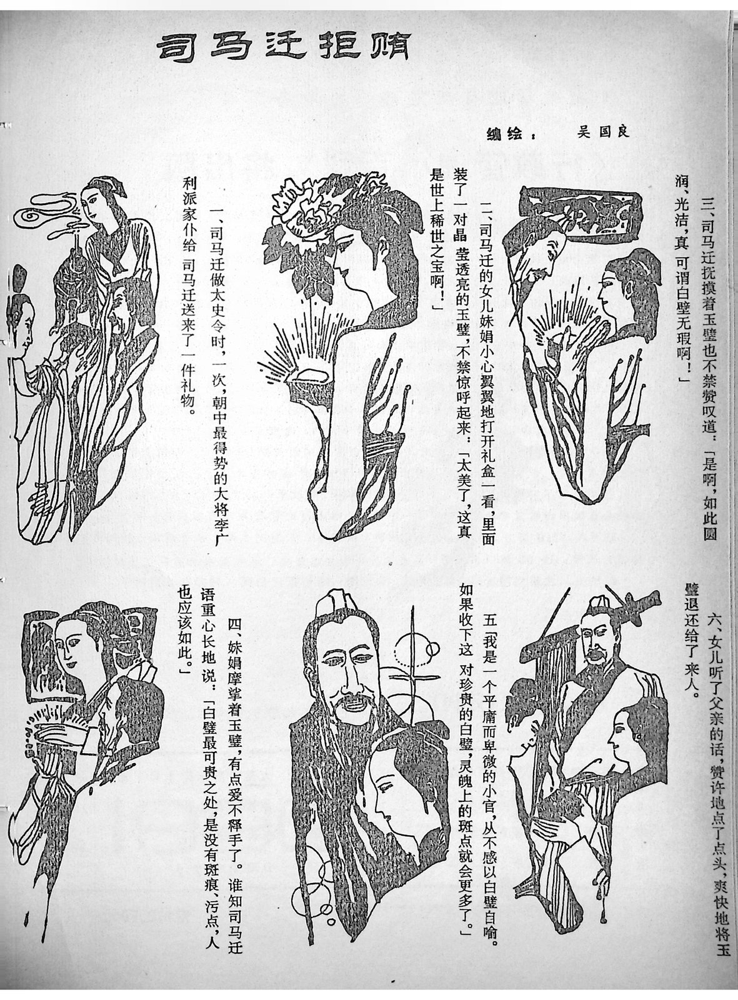

吴国良编绘 《人事》1990年第4期（总第55期），封三
司马迁拒贿
Sima Qian Refuses a Bribe
- Panel text
- 一、司马迁做太史令时，一次，朝中最得势的大将李广利派家仆给司马迁送来了一件礼物。
1. When Sima Qian was Grand Historian, the most powerful general at court, Li Guangli, once sent a servant to bring him a gift. - 二、司马迁的女儿妹娟小心翼翼地打开礼盒一看，里面装了一对晶莹透亮的玉璧，不禁惊呼起来：“太美了，这真是世上稀世之宝啊！”
2. Sima Qian's daughter Meijuan carefully opened the gift box and found a pair of gleaming, translucent jade discs. She cried out: “How beautiful — this is a treasure rare in all the world!” - 三、司马迁抚摸着玉璧也不禁赞叹道：“是啊，如此圆润、光洁，真可谓白璧无瑕啊！”
3. Stroking the jade, Sima Qian too could not help exclaiming: “Yes — so smooth, so lustrous: truly a white jade without a flaw!” - 四、妹娟摩挲着玉璧，有点爱不释手了。谁知司马迁语重心长地说：“白璧最可贵之处，是没有斑痕、污点，人也应该如此。”
4. Meijuan caressed the discs and could hardly bear to put them down. But Sima Qian said earnestly: “What is most precious about white jade is that it has no blemish or stain — and so should a person be.” - 五、“我是一个平庸而卑微的小官，从不敢以白璧自喻。如果收下这对珍贵的白璧，灵魂上的斑点就会更多了。”
5. “I am an ordinary, humble minor official and have never dared compare myself to white jade. If I accepted this precious pair, the stains on my soul would only multiply.” - 六、女儿听了父亲的话，赞许地点了点头，爽快地将玉璧退还给了来人。
6. Hearing her father's words, his daughter nodded approvingly and readily returned the jade to the messenger.
- 一、司马迁做太史令时，一次，朝中最得势的大将李广利派家仆给司马迁送来了一件礼物。
- Description
- Six-panel picture story: the powerful general Li Guangli sends the historian Sima Qian a pair of flawless jade discs; Sima Qian's daughter admires them, but he tells her a person, like jade, is valued for having no flaw, and she returns the gift.
- Note
- The anecdote is a moral fable rather than recorded history.
- Artist
- Wu Guoliang 吴国良 (adapted and drawn)
- Published in
- 《人事》1990年第4期（总第55期）, inside back cover
- Themes
- Exemplary history · Gifts and banquets · Picture stories (连环画)

Cite
Wu Guoliang, “司马迁拒贿” [Sima Qian Refuses a Bribe], Renshi (Personnel) 《人事》, 1990, no. 4, inside back cover.